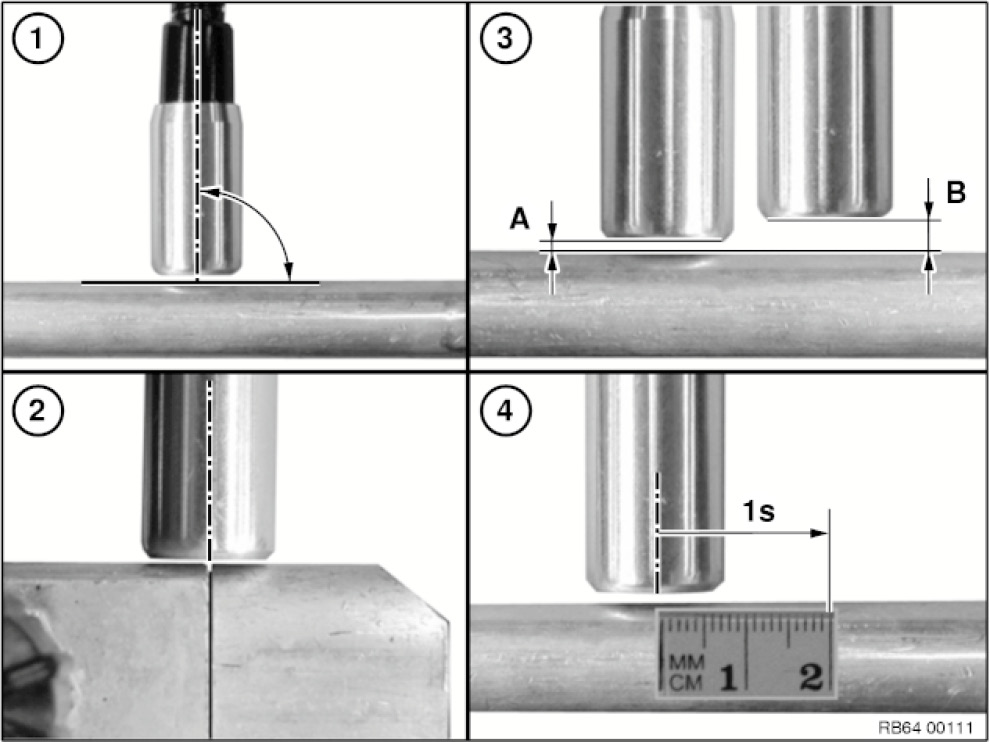
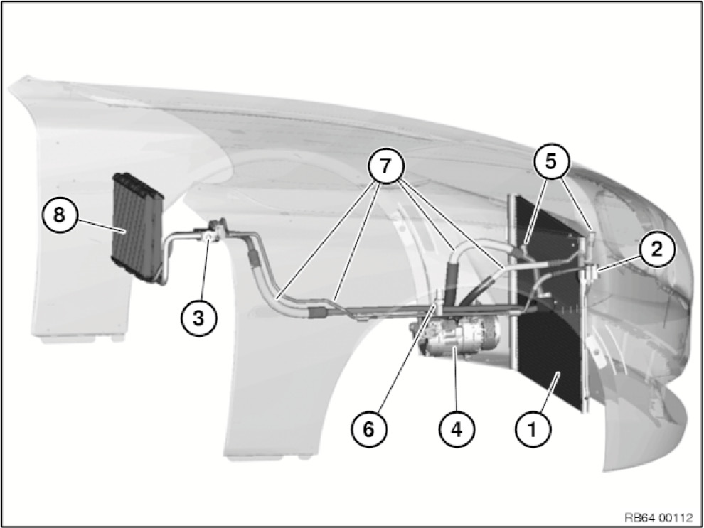
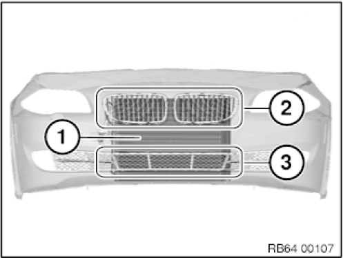
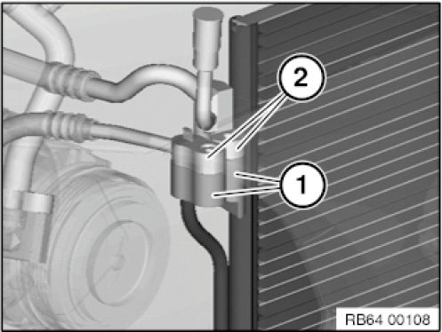
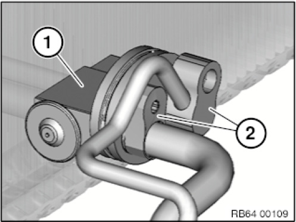
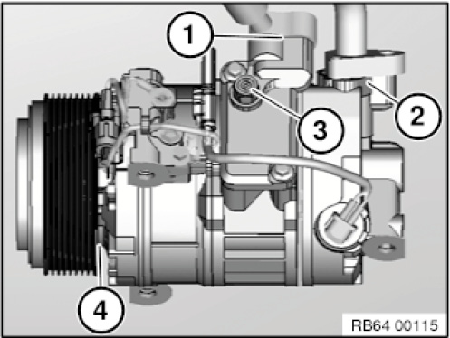
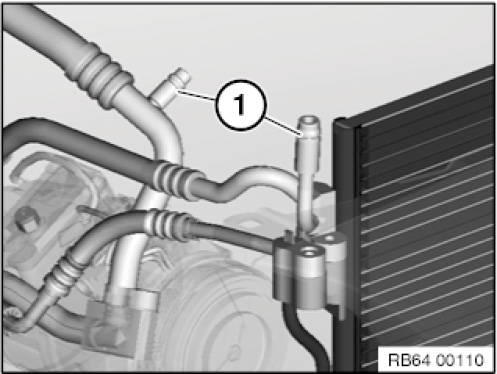
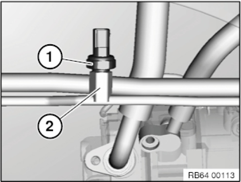
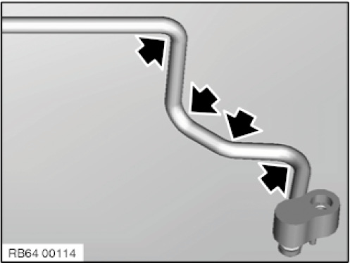
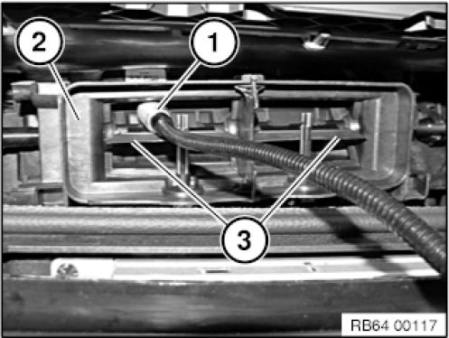

64 50 ... Leak Detection With Forming Gas
64 50 ... Leak detection with forming gas

NOTE:
Leak detection with forming gas replaces the leak detection that is restricted in EU countries using UV.
Observe national regulations in all other countries.

IMPORTANT:
Compliance with the manufacturer's operating instructions provided in the equipment case is absolutely mandatory.
Comply with SI 08 08 10 (670).
Read and comply with the manufacturer's operating instructions provided with the special tool particularly with regard to accident prevention, health protection and environmental protection.
Only the basic procedure is described in the following.

IMPORTANT: Wear personal protective clothing/equipment.

NOTE:
Determine the customer's use behaviour prior to leak detection.
Certain user behaviors can lead to a loss of refrigerant from the refrigerant circuit even if there is no leak. This may occur if the customer has not used the air conditioning for a period of more than six months. This may cause O-rings to harden and refrigerant may escape. In this case, it will be sufficient to top up the refrigerant circuit and switch the air conditioning on for approximately 10 minutes while the engine is running.
Necessary preliminary tasks:
- If components of the refrigerant circuit are contaminated, clean the engine compartment. Otherwise, the sensor head of the leak detector will become contaminated.
Comply with notes and instructions on handling high pressure cleaner.
- Remove centre fresh air grille
- Remove drive belt from A/C compressor
- Drain off air conditioning system
- Fill the air conditioning system with forming gas
- Set pressure to 5 bar
To reach components of the refrigerant circuit with the leak detector, it may be necessary to remove the following parts, depending on the vehicle:
- Covers
- Trim panels
- Air duct
- Intake silencer
- Bulkheads
With some vehicles, the air flaps of the automatic air flap control (LKS) must be opened.

IMPORTANT:
Always perform the leak detection with a pressure of 5 bar at first.
This is absolutely necessary to find certain leaks, such as in the area of the O-rings.
If no leak is detected, repeat the leak detection with 10 bar.
IMPORTANT:
The leak detection may not be performed more than 3 hours after filling the refrigerant circuit with forming gas.
Forming gas consists of 95% nitrogen and 5% hydrogen. The leak detector will detect hydrogen. If this is leaking from the refrigerant circuit even though the pressure remains, the leak detection bears no results.
IMPORTANT:
Risk of damage.
Maximum approved pressure: 10 bar
Do not start the engine during the entire procedure.

Notes for handling the leak detector:
1. Sensor head must always stand vertical to the surface to be tested.
2. Sensor head must always be aligned to the centre of the point to be tested. Slowly guide the sensor head around the point (e.g. connection point, sealing surface, etc.).
3. The optimal distance (A) between sensor head and surface to be checked must permanently be approximately 1 mm, maximum distance (B) at points that are difficult to access approximately 5 mm.
4. Test speed may not exceed 2 cm per second.
NOTE: If the leak detector indicates a leak, remove the sensor head from the leak for approximately 10 seconds. Then check if the leak is still indicated at the same point. Repeat the procedure up to three times to ensure that a leak is actually present at this point.
NOTE:
If a leak is detected in the refrigerant circuit, the remaining points must also be tested.
Multiple leaks may be present in the refrigerant circuit.
NOTE: Replace the leaking component. Relieve the pressure from the refrigerant circuit prior to replacement.
IMPORTANT:
Compliance with the instructions above is absolutely mandatory.
Non-compliance will significantly reduce the efficiency of leak detection.

Overview of points to be checked in test sequence:
1. Capacitor
2. Connection point capacitor - refrigerant line
3. Expansion valve
4. Air conditioning compressor
5. Filler neck high pressure and low pressure
6. Refrigerant pressure sensor
7. Lines
8. Evaporator

1. Capacitor:
Damage caused by stone chipping, etc. is the most frequent cause of capacitor leaks (1):
1. Visual inspection in the area of the ornamental grille (2) and air inlet grille, centre (3).
2. Check damaged points first.
3. Check the remainder of the capacitor.

2. Connection point capacitor - refrigerant line
Check the connection point between the connection at the capacitor (1) and refrigerant lines (2).

3. Expansion valve:
Check the connection point between the expansion valve (1) and refrigerant lines (2).

4. A/C compressor:
Check the following components on the A/C compressor:
1. High-pressure connection
2. Low pressure connection
3. Pressure relief valve
4. Radial shaft seal of the magnetic coupling: Turn the magnetic coupling several times by hand during the leak detection.

5. Filler neck
Blow out the filler neck (1) prior to testing.

6. Refrigerant pressure sensor
Check the sealing surface between the refrigerant pressure sensor (1) and the refrigerant line (2).

7. Refrigerant lines:
1. Perform visual inspection
2. Check damaged points first.
3. Check bending points at points marked with an arrow. Leaks occur especially frequently at these points.
4. Check the remainder of the refrigerant line.

8. Evaporator:
Compliance with the following settings is absolutely required:
- Air recirculation function On
- Lowest blower speed
- Lowest temperature
- Set the air distribution to ventilation (air may only flow out of the centre fresh air grille)
Position sensor head (1) in air duct of middle fresh air grille (2) as illustrated and move slowly from inside to outside above and below air flap (3). Carry out this operation on the left and right fresh air grilles.
IMPORTANT:
Some vehicles have an expansion valve directly next to the fresh air intake for the passenger compartment.
In this case the expansion valve must be covered.
Following the completed leak detection:
- Evacuate and fill heating and air conditioning system